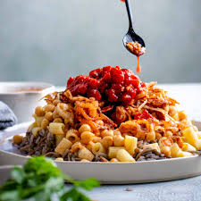

koshari is Egypt's national dish and a widely popular street food.[1] It is a traditional Egyptian staple, mixing pasta, Egyptian fried rice, vermicelli and brown lentils,[2][3] and topped with chickpeas, a garlicky tomato sauce, garlic vinegar, and crispy fried onions. Sprinklings of garlic vinegar and hot sauce are optional.
